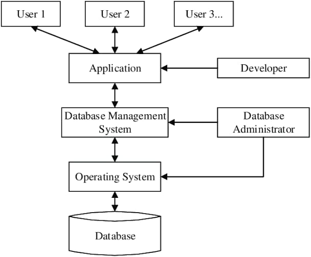

Database Systems
Links:
what's the database?
A database is an organized collection of data, generally stored and accessed electronically from a computer system. Where databases are more complex they are often developed using formal design and modeling techniques.
The database management system (DBMS) is the software that interacts with end users, applications, and the database itself to capture and analyze the data. The DBMS software additionally encompasses the core facilities provided to administer the database. The sum total of the database, the DBMS and the associated applications can be referred to as a "database system". Often the term "database" is also used to loosely refer to any of the DBMS, the database system or an application associated with the database.
Computer scientists may classify database-management systems according to the database models that they support. Relational databases became dominant in the 1980s. These model data as rows and columns in a series of tables, and the vast majority use SQL for writing and querying data. In the 2000s, non-relational databases became popular, referred to as NoSQL because they use different query languages.
